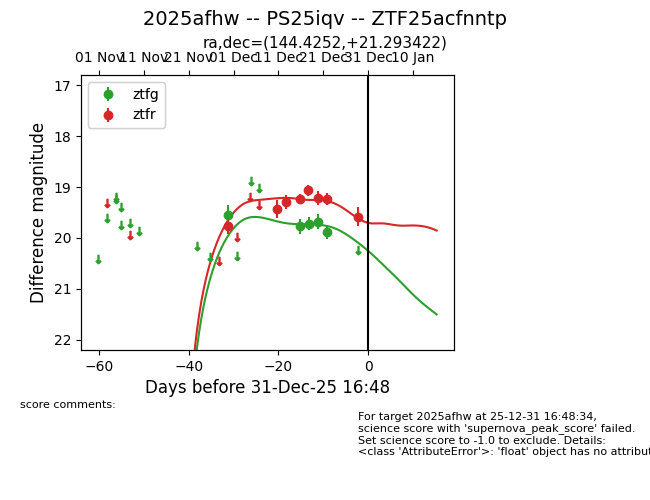
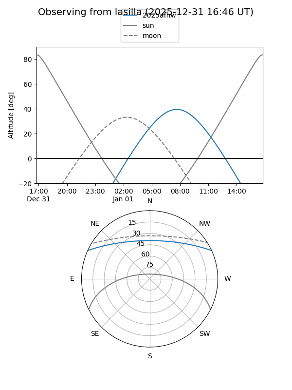
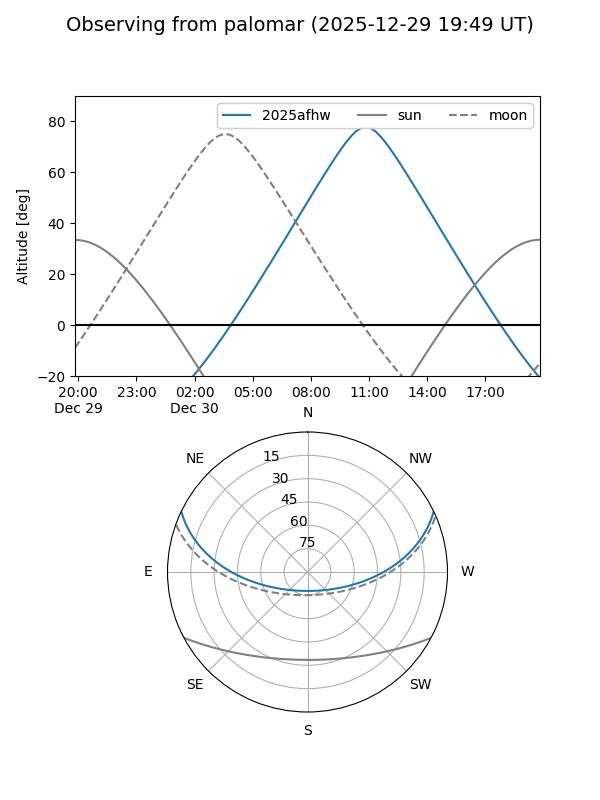
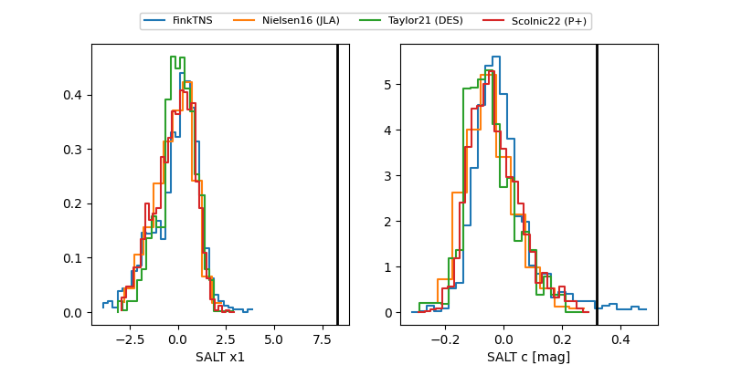

2025afhw
Target 2025afhw at 2025-12-18 13:07
Aliases and brokers:
FINK: fink-portal.org/ZTF25acfnntp
Lasair: lasair-ztf.lsst.ac.uk/objects/ZTF25acfnntp
ALeRCE: alerce.online/object/ZTF25acfnntp
TNS: wis-tns.org/object/2025afhw
YSE: ziggy.ucolick.org/yse/transient_detail/2025afhw
alt names
ZTF25acfnntp (ztf,fink_ztf)
2025afhw (tns,yse)
PS25iqv (panstarrs)
Coordinates:
equatorial (ra, dec) = 144.4252,+21.29342
equatorial (HMS+DMS) = 09:37:42.04,+21:17:36.32
galactic (l, b) = (209.5405,+45.70591)
Photometry
last ztfg=19.77, ztfr=19.07
2 ztfg, 5 ztfr detections
Lightcurve

Visibility


Additional plots
